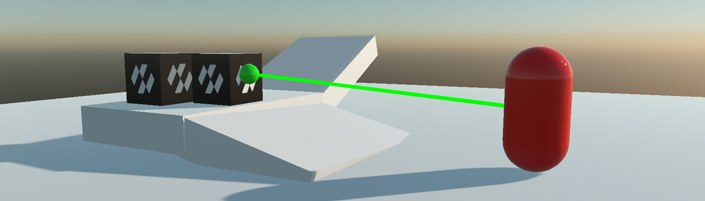
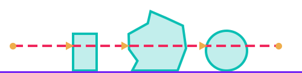

Queries

A query asks the world what is there, without moving anything. Aiming a weapon, checking whether a character can step forward, finding everything caught in a blast: all of it is done with queries rather than by putting bodies into the scene and watching what they hit.
All of them live on the PhysicsManager:
| Query | Answers |
|---|---|
| Ray cast | What does this line hit first? |
| Shape cast | If I sweep this shape along this line, where does it first touch something? |
| Overlap | What is inside this volume right now? |
Important
Queries see the world as the last step left it. A body created earlier in the same frame is not in it yet, because bodies are added at a safe point in the step. Call physicsManager.FlushPending() first if a query has to see something that was only just created.
Ray Casting
| RayCast returns the closest hit along the ray, which is what "what am I aiming at" means. | |
 |
RayCastAll returns every body the ray crosses, in no particular order. |
A ray swept across a scene. The cross is the hit point and the yellow line is the surface normal there.
| Method | Description |
|---|---|
| RayCast(origin, direction, maxDistance, out hit) | The closest hit, with the default filter. |
| RayCast(origin, direction, maxDistance, in filter, out hit) | The closest hit, filtered. |
| RayCast(ref ray, maxDistance, in filter, out hit) | The same, from a Ray. |
| RayCastAll(origin, direction, maxDistance, results, in filter) | Every hit, appended to results. Returns how many there were. |
public class Picker : Behavior
{
[BindSceneManager]
private PhysicsManager physicsManager = null;
[BindComponent]
private Transform3D transform = null;
public Entity PickAhead()
{
Vector3 origin = this.transform.Position;
Vector3 direction = this.transform.WorldTransform.Forward;
if (this.physicsManager.RayCast(origin, direction, 100f, out RayCastHit hit))
{
return hit.Entity;
}
return null;
}
}
RayCastHit
| Property | Description |
|---|---|
| Body | The body that was hit, as a PhysicsBody. It may be a StaticBody; hit.Body as RigidBody is the test for one that can be pushed. |
| Entity | Its entity, which is usually what gameplay code wants. |
| Collider | Which collider of a compound shape was hit. |
| Point | Where the ray met the surface, in world space. |
| Normal | The surface normal there. |
| Distance | How far along the ray the hit is, in metres. |
| Fraction | The same, as a fraction of maxDistance, from 0 to 1. |
Shape Casting
A shape cast sweeps a whole shape along a line instead of a single ray. It is what answers "can I move there", since a ray through the middle of a character says nothing about its shoulders.
A sphere swept along the same line as the ray above. The green outline is where it stopped; the cross is where it touched.
| Method | Description |
|---|---|
| SphereCast(radius, from, direction, maxDistance, in filter, out hit) | Sweeps a sphere. |
| BoxCast(halfExtents, from, orientation, direction, maxDistance, in filter, out hit) | Sweeps a box. |
| ShapeCast(collider, from, orientation, direction, maxDistance, in filter, out hit) | Sweeps the shape of an existing collider. |
| ShapeCastAll(collider, from, orientation, direction, maxDistance, results, in filter) | Every body the swept shape touches. |
// Can this character move a step forward without clipping a wall?
bool blocked = this.physicsManager.SphereCast(
radius: 0.4f,
from: this.transform.Position + Vector3.Up,
direction: this.facing,
maxDistance: 0.6f,
filter: QueryFilter.Ignoring(this.body),
out ShapeCastHit hit);
ShapeCastHit carries everything RayCastHit does, plus PenetrationDepth, how deep the shape already overlapped at the start of the sweep.
Tip
A shape cast starting inside a body reports a hit at distance zero. Passing the body you are casting from in QueryFilter.IgnoreBody is nearly always what you want, and QueryFilter.Ignoring(body) is the one-liner for it.
Overlap Queries
An overlap asks what is inside a volume right now. Nothing is swept and nothing moves.
| Method | Description |
|---|---|
| OverlapPoint(point, in filter, out hit) | The first body containing a point. |
| OverlapPointAll(point, results, in filter) | Every body containing it. |
| OverlapSphere(centre, radius, results, in filter) | Every body inside a sphere. |
| OverlapBox(centre, halfExtents, orientation, results, in filter) | Every body inside a box. |
| OverlapShape(collider, position, orientation, results, in filter) | Every body inside an existing collider's shape. |
| OverlapAABox(box, results, in filter) | Every body whose bounds meet an axis-aligned box. Broad phase only, so it is approximate and very fast. |
public void Explode(Vector3 centre, float radius, float force)
{
// Reused between calls rather than allocated here: an explosion that runs every frame while a
// charge burns would otherwise hand the collector a list a frame.
this.hits.Clear();
this.physicsManager.OverlapSphere(centre, radius, this.hits, QueryFilter.Default);
foreach (OverlapHit hit in this.hits)
{
// The overlap reports walls and floors too. Only a RigidBody has an impulse to receive.
if (hit.Body is not RigidBody body)
{
continue;
}
Vector3 away = body.CenterOfMassPosition - centre;
float distance = away.Length();
if (distance < 0.001f)
{
continue;
}
// Falls off with distance, so the edge of the blast nudges and the middle of it throws.
float falloff = Math.Max(0f, 1f - (distance / radius));
body.ApplyImpulse(away / distance * force * falloff);
}
}
OverlapHit carries Body, Entity and Collider, the same three as a ray hit. There is no point or normal: nothing was cast, so there is no contact to report.
Query Filters
Every query takes a QueryFilter. Its default value hits every solid body and skips sensors, which is what a query usually wants.
| Field | Default | Description |
|---|---|---|
| CategoryMask | None |
The categories the query may hit. Zero means every category, not none. |
| IncludeSensors | false | Whether sensors take part. Off by default: a sensor is a volume to be notified about, not an obstacle. |
| IgnoreBody | null | A body the query always skips, normally the one it starts from. Any PhysicsBody. |
| Predicate | null | An extra test per candidate body, a Func<PhysicsBody, bool>. Returning false skips it. |
| Factory | Description |
|---|---|
| QueryFilter.Default | Every solid body, no sensors. |
| QueryFilter.FromCategories(categories) | Restricted to a set of categories. |
| QueryFilter.Ignoring(body) | Everything except one body. |
// Only enemies, never the shooter, and only those still alive.
QueryFilter filter = QueryFilter.FromCategories(CollisionCategory.Cat3);
filter.IgnoreBody = this.body;
filter.Predicate = candidate => candidate.Owner.FindComponent<Health>()?.IsAlive == true;
int found = this.physicsManager.OverlapSphere(this.transform.Position, 8f, this.hits, filter);
Important
Predicate is called during the query, on the calling thread. Keep it to a test: do not create or destroy anything from inside one.